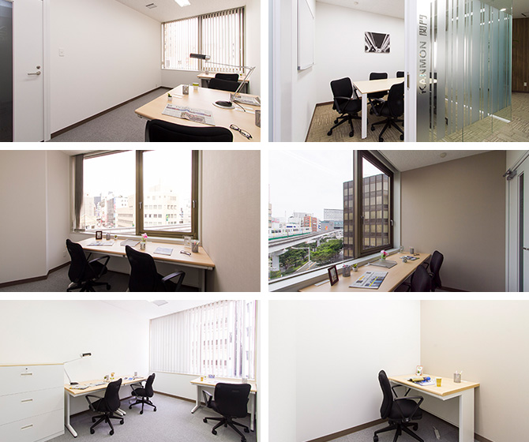

【個室レンタルオフィス】
オープンオフィス小倉
オープンオフィス小倉がNEW OPEN
九州の玄関口として、また東九州の交通の起点となるターミナル都市「小倉」。
通勤にも営業にも、集客にも有利にはたらく、好ロケーションセンター。北九州、東九州へのビジネス拠点に最適。
オープンオフィス小倉が提供するオフィスサービス
-
 高速インターネット＜光ファイバー＞
高速インターネット＜光ファイバー＞
- 100Mbpsの光ファイバーによるブロードバンド環境をご用意しました。各部屋に配線済みですので、パソコンに繋げばすぐLAN経由で高速インターネットを利用出来ます。
-
 ネットワーク・カラーレーザープリンタ+スキャナー
ネットワーク・カラーレーザープリンタ+スキャナー
- ネットワークを利用して、各お部屋のパソコンから印刷できます。プリンタをご用意いただく必要もございません。
スキャナー機能も搭載しております。
-
 カラーレーザーコピー
カラーレーザーコピー
- フロア内にご用意してあります。カード方式でコピーが出来ますので、小銭の準備が不要です。
-
 ICカードキーによる入室管理
ICカードキーによる入室管理
- 専用ICカードを使ったホテル式のスマートシステムを用いて、セキュリティーを向上させています。
-
 ミーティングルーム（会議室）
ミーティングルーム（会議室）
- 商談・会議にご利用いただける共有スペースをご用意しています。インターネットで簡単に予約をしていただけます。
-
 無線LAN（WiFi）
無線LAN（WiFi）
- 共有スペースとミーティングスペースにて、無線LAN(WiFi)サービスをご利用いただけます。

オープンオフィス小倉の特徴

東九州への起点となるターミナル都市
小倉駅前交差点、視認性の高いロケーション
通勤、営業、集客に有利な交通の利便性
小倉のメインビジネスエリア
24時間利用可能。貴社の働き方にも柔軟に対応
オフィス周辺のMap
オープンオフィス小倉近隣のスポット
- ■銀行
- 三菱東京ＵＦＪ銀行 北九州支店
三井住友銀行 北九州支店
みずほ銀行 北九州支店
西日本シティ銀行 小倉支店
福岡銀行 小倉支店
福岡ひびき信用金庫 小倉支店 - ■レストラン
- 稚加栄 小倉店 (料亭)
SUSHI BAR YAMA (和食割烹)
鮨 いけ田 (寿司)
パッソ デル マーレ (イタリアン)
Restaurant Futatsuishi フタツイシ (フレンチ) - ■ホテル
- リーガロイヤルホテル小倉
ホテルニュータガワ
ステーションホテル小倉 - ■レジャー
- スポーツクラブ ルネサンス小倉
ＳＤフィットネス小倉
ライザップ小倉 - ■映画館
- 小倉コロナシネマワールド
シネプレックス小倉
Ｔ・ジョイリバーウォーク北九州
オープンオフィス小倉の住所・アクセス
- 住所:
- 福岡県北九州市小倉北区鍛冶町1-1-1 北九州東洋ビル 3F,5F
- 空港からのアクセス:
- 北九州空港から小倉駅までバスで約30分
福岡空港から小倉駅までバスで約80分
福岡空港から小倉駅まで新幹線利用、博多駅経由で約25分 - 電車からのアクセス:
- ＪＲ「小倉駅」 徒歩3分
北九州モノレール「平和通駅」徒歩1分 - お車でのアクセス:
- 平和通りと勝山通りの交差点、小倉駅前交差点の角
オープンオフィス小倉のフロアマップ
3F

5F

※フロア内は禁煙です。
※こちらはイメージ図となりますので、状況が異なる場合は現況を優先させていただきます。
- ◆初回納入金
- 利用料1ヶ月分の保証金
- ◆共益費
- 水道光熱費、ビル共益費、ゴミ出し、フロア・トイレの清掃、共有部分の消耗品代を含みます。
リージャスグループの説明
リージャス・グループは、柔軟なワークスペースを提供する世界最大の企業です。そのネットワークは世界120カ国1,100都市、3300拠点に及びます。会員数は250万人で、業界で成功を収める大小様々な企業や起業家の方々にご利用いただいています。
リージャスは、個室タイプのレンタルオフィス、コワーキングスペースなど多彩なオフィスプラン、近年需要が高まるモバイルワークやバーチャルオフィス、障害復旧サービスの提供を通じ、お客様が予算やワークスタイルに合わせて仕事を行うことができる環境を提供いたします。